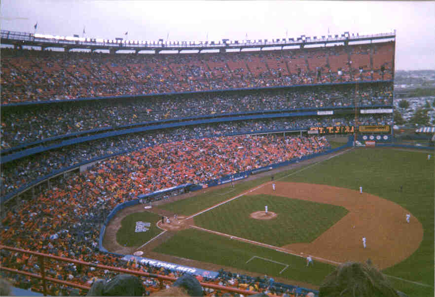
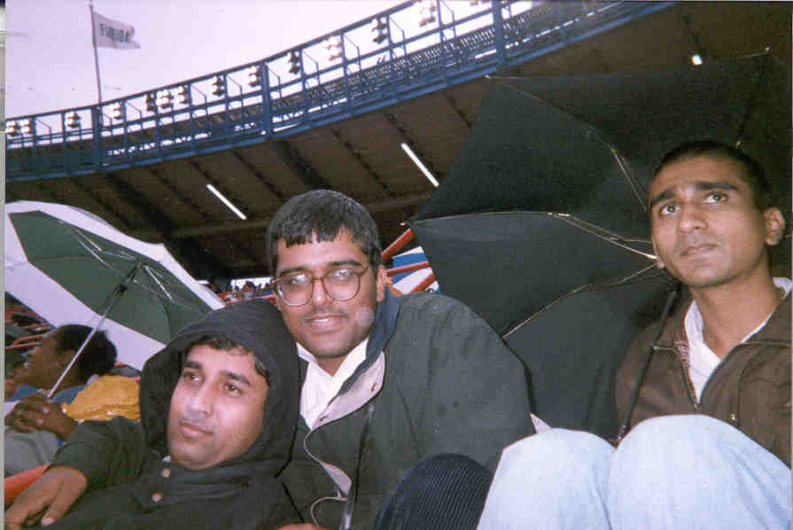

Pictures from my first visit to a baseball
match.

Mets Vs. Cardinals in Shea Stadium, Flushings, NY.

Srikant, Venkat and Saurabh at the game.

I tried taking many closeup pictures of players by placing a $20 disposable
camera against the binaculors in my hand, but the trick didn't work :(
So much for my proof of having seen Mark McGwire!

Our attempt at taking a shot of the Shea Stadium from within the car.